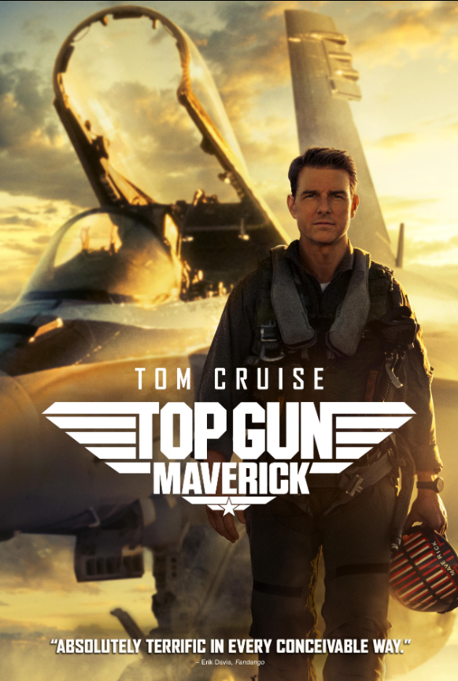

Name: Inception
Description
A thief who steals corporate secrets through the use of dream-sharing technology is given the inverse task of planting an idea into the mind of a C.E.O., but his tragic past may doom the project and his team to disaster.

Inception 2010 imdb
Name: Top Gun Maverick
Description
After thirty years, Maverick is still pushing the envelope as a top naval aviator, but must confront ghosts of his past when he leads TOP GUN's elite graduates on a mission that demands the ultimate sacrifice from those chosen to fly it.

TopGun 2022 imdb